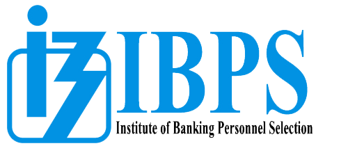

Sector guide
Banking jobs: who can apply, and how selection works
Banking recruitment explained in diagrams: which qualification unlocks which post, every selection stage, and live listings pulled from the official feed.
Not a recruiting authority. Confirm every date, fee and eligibility clause on the official notice linked from each listing.
Who can apply: qualification → post
Find your qualification on the left. Every post it unlocks is listed under it, with the pay level and what the job actually involves.
12th Pass
- Bank Clerk (IBPS / SBI)ClerkCash, accounts, customer service
- RRB Office AssistantClerkRural bank clerk, multipurpose
12th pass (60% for SBI). Computer literacy. Age 20–28 (relaxations apply).
Graduate
- Probationary Officer (PO)OfficerBranch management, lending, operations
- Specialist Officer (SO)OfficerIT, HR, Law, Marketing, Rajbhasha
- RRB Officer Scale IOfficerRural bank officer, all functions
- RBI Grade B OfficerOfficerCentral bank, policy, regulation
Any degree. SO needs specific qualification (B.Tech for IT, LLB for Law, etc.). Age 20–30.
Post Graduate
- RBI Grade B (DEPR/DSIM)OfficerEconomics, Statistics, Finance
- NABARD Grade A/BOfficerRural development, agriculture finance
Master's in relevant field. Age 21–30 (relaxations apply).
How selection works, stage by stage
Each stage below is a real gate. Only the last one leads to an appointment letter.
-
Preliminary Exam
100 Qs, 60 min. English, Quantitative Aptitude, Reasoning Ability.
Qualifying. Cut-off per section and overall. No interview for Clerk.
-
Main Exam
200 Qs, 160 min. Reasoning, English, Quant, GA, Computer. + Descriptive (letter + essay).
Merit prepared from Main score. Descriptive qualifying.
-
Interview (PO/SO only)
20-min panel. Banking awareness, current affairs, personality, situational questions.
100 marks. Final merit = Main (80%) + Interview (20%).
-
Document Verification
All originals, caste, domicile, NOC, gap certificate.
Any discrepancy = rejection. Verify before applying.
Career path after joining
Promotions run on seniority plus departmental exams. The rung you enter on depends on the post you clear.
- 1 Clerk / Office Assistant (Level 1-2)
- 2 Probationary Officer / Scale I (Level 7)
- 3 Manager / Scale II (Level 8-9)
- 4 Senior Manager / Scale III (Level 10-11)
- 5 Chief Manager / AGM / DGM (Level 12-14)
What the notification does not tell you
The parts candidates usually discover too late.
-
IBPS PO and SBI PO are the most competitive. 10 lakh+ applicants for 4000–5000 vacancies.
-
Clerk has no interview — pure merit. PO has interview (20% weight). Focus accordingly.
-
Banking exams test speed + accuracy. 60 min for 100 Qs in Prelims = 36 sec per question.
-
SBI PO has group exercise + interview (different from IBPS). Prepare for group discussion.
-
RRB (Regional Rural Bank) exams are easier than IBPS/SBI but fewer vacancies and lower pay.
-
RBI Grade B is the most prestigious banking exam. Requires deeper economics/finance knowledge.
Banking listings tracked right now
60 live listings matched to this sector. Each opens the summary and the official source link.
- Result / recruitment update RRB Assistant Loco Pilot ALP CEN 01/2025 CBT II Result 2026 Closes 19 May 2025
- Result / recruitment update Railway RRB NTPC Graduate Level CBT II Result CEN 06/2025 Closes 27 November 2025
- Result / recruitment update Railway RRB NTPC 10+2 UG Level CBT II Result 2026 | CEN 07/2025 Closes 4 December 2025
- Result / recruitment update Railway RRB Junior Engineer JE CEN 05/2025 Result Closes 10 December 2025
- Result / recruitment update Railway RRB Ministerial and Isolated CEN 08/2025 Result Closes 29 January 2026
- Result / recruitment update RBI Bank Office Attendant Score Card 2026 Closes 4 February 2026
- Result / recruitment update Reserve Bank RBI Assistant Mains Result 2026 Closes 10 March 2026
- Result / recruitment update UPCISB UP Co-operative Bank Various Post Result 2026 Closes 15 April 2026
Frequently asked questions
What is the difference between IBPS PO and SBI PO?
IBPS PO recruits for 11 public sector banks (excluding SBI). SBI PO recruits only for SBI. SBI PO has group exercise + interview; IBPS PO has only interview. SBI PO pay is slightly higher.
Can a 12th pass apply for bank jobs?
Yes, for Clerk posts (IBPS Clerk, SBI Clerk, RRB Office Assistant). PO and SO require graduation. RBI Grade B requires graduation or post-graduation depending on the post.
What is the age limit for banking exams?
Clerk: 20–28 years. PO: 20–30 years. SO: 20–30 years. RBI Grade B: 21–30 years. Age relaxations: SC/ST 5 years, OBC 3 years, PwD 10 years.
How many attempts are allowed?
IBPS PO: no attempt limit (age-based). SBI PO: no attempt limit. RBI Grade B: 6 attempts for General, no limit for SC/ST/OBC/PwD.
Is there negative marking in banking exams?
Yes. 0.25 marks deducted per wrong answer in both Prelims and Mains. No negative marking in descriptive paper or interview.
Where do I find official banking notifications?
ibps.in (IBPS), sbi.co.in/careers (SBI), rbi.org.in (RBI), ibps.in (RRB). SarkariJobs+ links the official notification on every listing page.
About this guide
SarkariJobs+ is an independent tracker, not a recruiting authority. The post structure, pay levels and selection stages above are summarised from published recruitment notifications for this sector; where a notification differs, the notification wins. Listing dates, vacancy counts and fees are taken from the feed and credited to the source page.